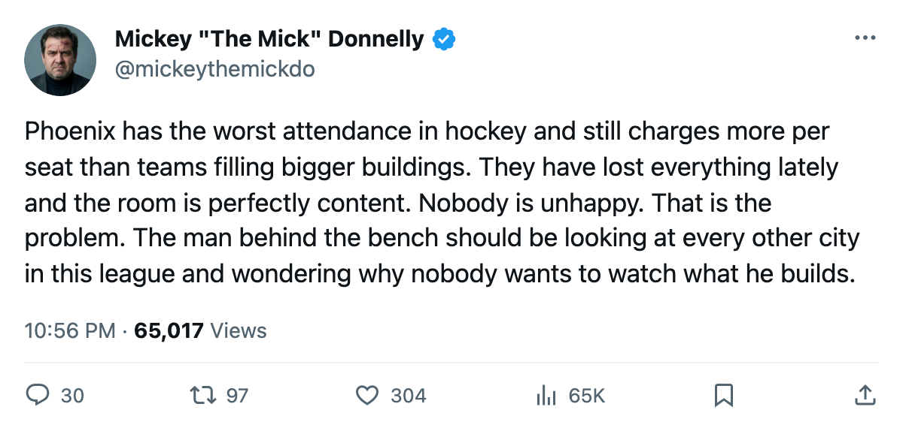
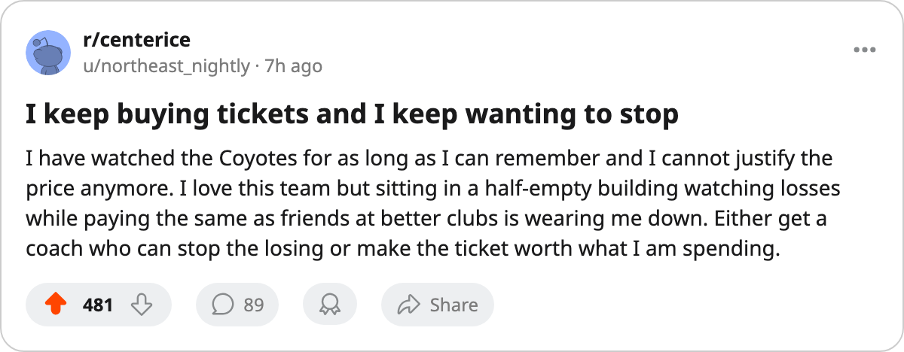

SHOW UP, PEOPLE: 11,913 BODIES, $82 A SEAT, 1-6-0. THE MOST EXPENSIVE GHOST TOWN IN HOCKEY
The worst attendance in the league belongs to the club that asks the most per seat and delivers the least on the ice.
 Mickey "The Mick" DonnellyColumnist, ex-goalie · The Penalty Box
Mickey "The Mick" DonnellyColumnist, ex-goalie · The Penalty Box
The  Phoenix Coyotes draw 11,913 fans a night. That is the worst in this league. The next-lowest building fills 13,473. The front office charges $82 a ticket to close that gap.
Phoenix Coyotes draw 11,913 fans a night. That is the worst in this league. The next-lowest building fills 13,473. The front office charges $82 a ticket to close that gap.
The Phoenix Coyotes sit 1-6-0, 4 points, on a 5-game losing streak. Revenue sits at $28.07M a night, the lowest in hockey, and profit at $15.09M, also the lowest. A payroll of $55.41M returns $13.85M per point, second-worst in this league behind  Ottawa Senators.
Ottawa Senators.
The coach owns all of it. He has them losing 5 straight, scoring 17 goals in 8 games. Morale Scale reads 91.9, above the median. The players are not the problem. The lineup card is.
No Phoenix player appears in the Bureau's top 30 scorers. The Development Index tracks Billy Tibbetts62, a 31-year-old right wing at 62 on the Book, down 4 on the Index. That is all the Bureau can see from this roster.
The  New York Islanders charge $81 and draw 13,473 at 3-3-0. Phoenix Coyotes charge $82 and draw 11,913 at 1-6-0. The front office asks these people to pay more to watch less. Those who stayed home made the right call. A coach who cannot stop a 5-game slide in October, with nothing at stake but the bottom of the Pacific, has earned a half-empty building.
New York Islanders charge $81 and draw 13,473 at 3-3-0. Phoenix Coyotes charge $82 and draw 11,913 at 1-6-0. The front office asks these people to pay more to watch less. Those who stayed home made the right call. A coach who cannot stop a 5-game slide in October, with nothing at stake but the bottom of the Pacific, has earned a half-empty building.
They play  New York Rangers Tuesday and the Islanders Wednesday. That New York building fills 14,497 on a $92.95M payroll. The Phoenix Coyotes fill 11,913 on $55.41M and cannot win a game. The 11,913 who show up will watch them lose, or watch them lose in overtime and collect a point nobody needed, and drive home past the men who looked at the price and stayed on the couch.
New York Rangers Tuesday and the Islanders Wednesday. That New York building fills 14,497 on a $92.95M payroll. The Phoenix Coyotes fill 11,913 on $55.41M and cannot win a game. The 11,913 who show up will watch them lose, or watch them lose in overtime and collect a point nobody needed, and drive home past the men who looked at the price and stayed on the couch.
That gap will not shrink this week. Phoenix will not win in New York. The coach will talk about work ethic and the room will nod, because 91.9 means nobody is unhappy enough to push back. A room at 91.9 while the team sits at 1-6-0 has given up, and the 11,913 who still drive to the rink know it better than the man behind the bench.

